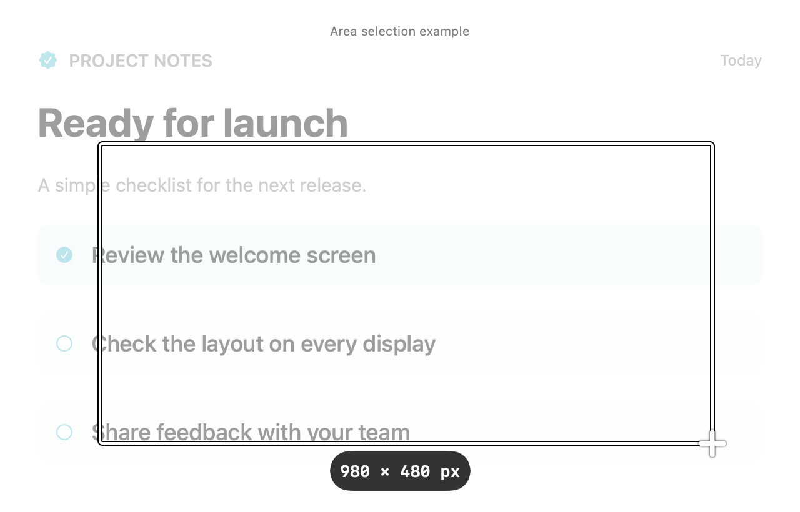
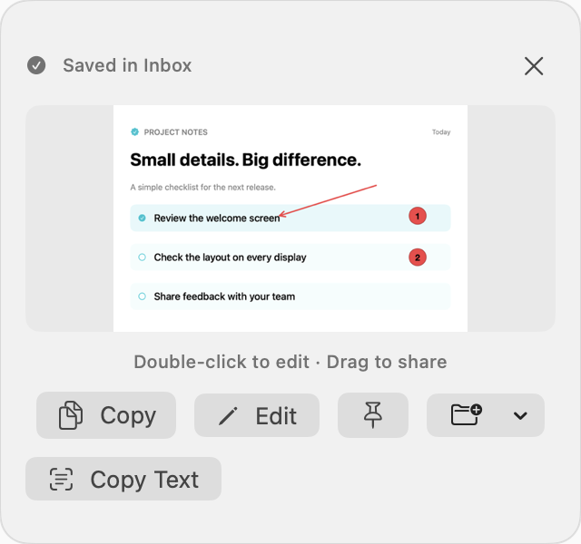
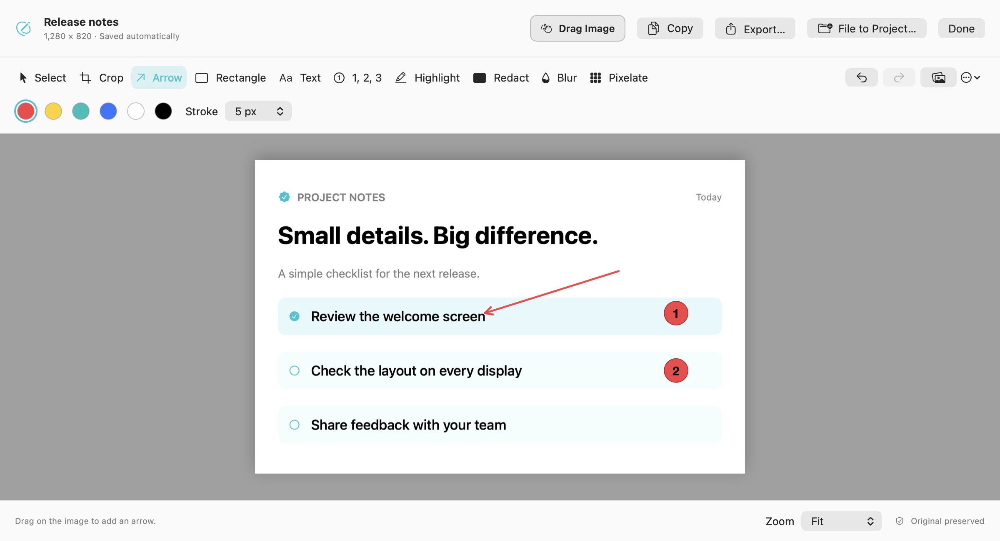
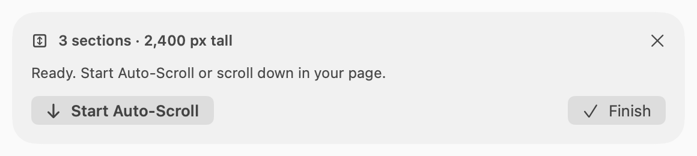
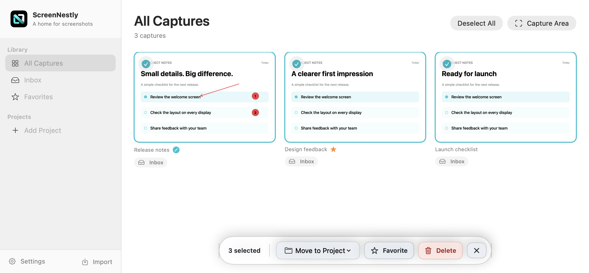

Getting started with ScreenNestly
The first time you open ScreenNestly, a short guide walks you through setup. You can choose Set Up Later and reopen it anytime from Help → Getting Started…, including Help in the menu-bar dropdown.
1. Allow screen capture
- In the guide, open Permissions and click Allow Screen Capture.
- Open System Settings → Privacy & Security → Screen & System Audio Recording. Enable ScreenNestly and approve macOS’s prompt. If macOS asks you to quit and reopen, your guide step is remembered.
- Return to ScreenNestly. The status changes to Enabled; Check Again refreshes it manually.
ScreenNestly captures still images and does not record audio. You can import images without screen-capture permission. macOS wording can vary; see Apple’s permission guide.
Two permissions are optional:
- Accessibility allows Auto-Scroll to send scroll gestures. Enable it from the Permissions page when you want Auto-Scroll. Manual scrolling does not need it.
- Folder access lets Auto-Rules watch a folder. Use Choose Folder… to select it. ScreenNestly’s own captures already save in Inbox.
2. Take your first screenshot
- Bring the window you want to capture to the front.
- Press ⌘⇧2, or click ScreenNestly’s viewfinder icon in the macOS menu bar and choose Capture Area. If you changed the shortcut, the app’s guide shows your current assignment.
- Drag with the + cursor and release. Press Escape to cancel.

Illustration of the selection rectangle and cursor.
For an entire window or display, choose Capture Window or Full Screen from the menu-bar dropdown.
3. Share or edit
Your capture saves to Inbox and appears in a small corner preview.

- Drag the thumbnail to an app that accepts images or files.
- Click Copy to paste it elsewhere.
- Click Edit, or double-click the thumbnail, to annotate.
- Click Pin to keep a reference above other windows.
Closing the preview keeps your capture in the library.

Choose arrows, text, numbered steps, Blur, Pixelate, or Redact. Edits save automatically. To share the finished image, use Copy or drag Drag Image from the editor header. Both include your saved markups. Use solid Redact for information that must be completely hidden.
4. Capture a scrolling page
- Bring your page or document to the front. Choose Scrolling Capture from the menu-bar dropdown.
- Select the moving content below fixed headers and toolbars. Corner brackets show what will be captured.
- Click Start Auto-Scroll, or scroll slowly downward yourself. Keep the selected window uncovered and watch the section count grow.
- Click Finish. In the saved preview, use Fit Width and scroll to read the long image.

If no new section appears, check that the page is moving inside the selected area. If capture pauses because it cannot match an overlap, scroll back slowly toward the last captured section and pause. Auto-Scroll needs Accessibility access; check Help → Permissions…. Before a second section is captured, Save One Image saves a normal screenshot.
5. Keep your library organized

- Inbox contains captures that have not been filed to a project. All Captures includes every capture, including project items.
- Hover over a thumbnail and click its check circle, or press ⌘A while the gallery has focus. Use the floating bar to Move to Project, Favorite, or Delete.
- Delete moves library files to macOS Trash. Existing project exports remain in their folders.
- Use Import for one or several images. In the picker, Command-click or Shift-click to select multiple files.
- Add Project connects a folder. Set up automatic organization in Settings → Auto-Rules.
Open Settings with ⌘, to change appearance, capture shortcuts, or Quick Overlay behavior. The guide remains available through Help whenever you need it.
App screenshots use sample content. Light and dark versions are bundled in the app; the permission-page visual is a labeled illustration.